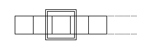
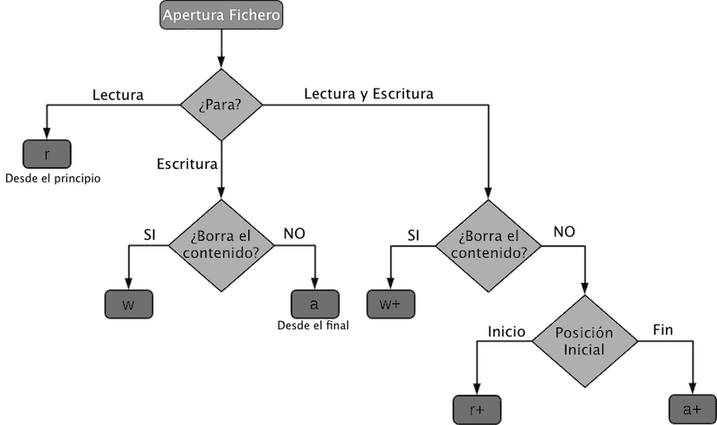

1º DAW - Programación - UT 8
Orientaciones
Orientaciones
Esta unidad de trabajo vamos a aprender los conceptos de gestión de datos sobre varias arquitecturas diferentes: archivos, bbdd y xml.
Es necesario el conocimiento de las unidades anteriores.
8.1. Ficheros
Qué es un fichero
Todas las estructuras de datos que hemos visto hasta ahora utilizan memoria principal. Esto tiene dos limitaciones importantes:
- Los datos desaparecen cuando el programa termina.
- La cantidad de los datos no puede ser muy grande debido a la limitación de la memoria principal.
Por eso existen también estructuras especiales que utilizan memoria secundaria: los ficheros. El fichero es además una estructura dinámica, en el sentido de que su tamaño puede variar durante la ejecución del programa dependiendo de la cantidad de datos que tenga.
El fichero es una estructura de datos que se almacena en memoria secundaria
Tipos de acceso
El fichero al estar en memoria secundaria, no todos los elementos son accesibles de forma inmediata. Solamente se puede acceder cada vez a un único elemento del fichero, que se denomina puntero del fichero. Dependiendo de cómo se desplaza este puntero por el fichero, podemos distinguir dos tipos de acceso:

- Acceso secuencial: El puntero del fichero sólo puede moverse hacia delante a partir del primer elemento y siempre de uno en uno.
- Acceso directo: El puntero del fichero se puede situar directamente en cualquier posición del fichero. Es un acceso similar al utilizado en los Arrays unidimensionales.
El acceso directo suele ser más eficiente, ya que para leer un dato no hace falta leer antes todos los anteriores.
Ficheros binarios y ficheros de texto
Existen dos tipos principales de ficheros atendiendo a cómo se almacenan los datos:
- Ficheros de texto: Contienen secuencias de caracteres separadas por saltos de línea (tipo str) codificadas según un código: ASCII, UTF-8, etc. El teclado (entrada estándar) y la pantalla (salida estándar) se consideran también ficheros de texto. Al leer o escribir variables de un fichero de texto se pueden realizar ciertas conversiones. Por ejemplo, cuando escribimos un entero con valor 10, este entero se convierte en los caracteres '1' y '0'.
- Ficheros binarios: Contienen secuencias de bytes. Los elementos se almacenan en el fichero exactamente igual que están almacenados en memoria principal, es decir, al leer o escribir no se realiza ningún tipo de conversión.
Modo de acceso a los ficheros
Cuando intentamos acceder a un fichero existen dos únicas acciones posibles: leer o escribir. Según estas acciones se pueden definir en ficheros de entrada (abiertos para lectura), ficheros de salida (abiertos para escritura) o ficheros de lectura / escritura (abiertos para ambas operaciones).
Los ficheros residen en un sistema de archivos y tendremos que saber la ruta de acceso al mismo para poder utilizarlo, dependiendo del SSOO de base los separadores cambian: / o \, con lo que recomendamos utilizar las herramientas de los lenguajes o librerías asociadas para crear estas rutas de acceso, evitando trabajar con características específicas de los SSOO.
Procesamiento de un fichero
Siempre que queramos realizar cualquier operación con ficheros se debe seguir el siguiente esquema:
Apertura de Fichero → Operaciones → Cierre del fichero
Es importante seguir el esquema y sobre todo no olvidar el cierre del fichero, si no queremos perder datos. Los SSOO no escriben inmediatamente los datos de memoria a disco, utilizan un buffer intermedio por eficiencia, si no cerramos el fichero no nos aseguramos que este buffer se descargue a disco y podremos perder las últimas operaciones.
8.1.1. Qué son los flujos
Los archivos o ficheros almacenados se tienen que tratar por parte del SSOO y de Python. Para esa gestión se crea un objeto especial en memoria. Por tanto, un flujo no es más que un objeto de control que gestiona un fichero en disco, creado en el momento de la apertura y destruido cuando se cierra el archivo. El flujo representa al archivo dentro de nuestro programa y da acceso a sus datos.
Bajo Python no se habla de flujos, se asocia más a lenguajes como C++ o Java, se utiliza directamente fichero o archivo, pero este concepto también existe y hay paquetes que lo implementan: io (https://docs.python.org/es/3/library/io.html) que utilizaría conceptos similares al lenguaje C++ o Java.
8.1.2. Acceso a ficheros de Texto y Binarios
Apertura de ficheros
Python tiene una función open() incorporada para abrir un archivo. Esta función devuelve un objeto archivo, también llamado identificador, ya que se usa para leer o modificar el archivo(sería similar al concepto del lenguaje C).
f = open("test.txt") # open file in current directory
f = open("C:/Python38/README.txt") # specifying full path
Modos de acceso.
Podemos especificar el modo al abrir un archivo en el momento de su apertura. En el modo, especificamos si queremos leer (r), escribir (w) o agregar (a) al archivo. También podemos especificar si queremos abrir el archivo en modo texto (t) o en modo binario (b).

- t Se abre en modo texto, no es necesario especificarlo. (default)
- b Se abre en modo binario
El valor predeterminado es leer en modo texto (rt) . En este modo, obtenemos cadenas (str) al leer del archivo. Por otro lado, el modo binario devuelve bytes (bytes) y este es el modo que se debe utilizar cuando se trata de archivos que no son de texto, como imágenes o archivos ejecutables.
f = open("test.txt") # equivalent to 'r' or 'rt'
f = open("test.txt",'w') # write in text mode
f = open("img.bmp",'r+b') # read and write in binary mode
f = open("test.txt",'w') # write in text mode
f = open("img.bmp",'r+b') # read and write in binary mode
Python no utiliza en la lectura y escritura una codificación estricta, por lo que debemos especificarla en el momento de la apertura si no queremos tener problemas. De hecho, la codificación por defecto que se usará si no la especificamos es dependiente de la plataforma, así en Windows utilizará cp1252 pero bajo Linux se utilizará utf-8.
Debemos especificar la codificación correcta o no se mostrarán los caracteres de forma adecuada, por lo que si el fichero no lo hemos creado nosotros habrá que encontrar la codificación y usarla. Cuando creemos nosotros los ficheros utilizaremos siempre que sea posible utf-8 independientemente de la plataforma en la que se ejecute.
f = open("test.txt", mode='r', encoding='utf-8')
Qué es la codificación de un fichero.
Cuando queremos representar el alfabeto y sus correspondientes letras que tenemos en el ordenador, hay que asignar a cada letra un valor numérico. La cantidad de letras que podemos usar dependerá del número de bits que usemos en la codificación. Por ejemplo, la codificación ASCII estándar utiliza 8 bits, lo que significa que solo podrá representar como máximo 256 letras, algunas menos ya que los 32 primeros códigos se utilizan para control.
El número de idiomas presentes en el mundo hizo que con estos 256 valores no se pudieran representar todos los guarismos y se hicieran conjuntos de ellos según el idioma. Así aparecieron las diferentes codificaciones que se determinan por el SSOO en los ajustes del mismo: latin1, cp1252, 8859-1, 8859-15. Cada uno de ellos asigna valores diferentes a sus símbolos y mismos símbolos pueden estar en posiciones diferentes, con lo que al intentar representarlos en pantalla no se corresponda (Las diferencias de las páginas de código estaban en los 128 caracteres superiores, los inferiores del código no cambiaban).
Con el tiempo la codificación ASCII se quedó obsoleta y no daba cabida a todos los caracteres en algunas lenguas con lo que se implementó una nueva codificación: UTF, esta permite que los bits a utilizar sean de 8, 16 o 32 bits pudiéndose representar todos los símbolos de todos los lenguajes en esta nueva representación.
No vamos a profundizar más en UTF, pero el estándar que más se está usando hoy en día es UTF-8, por lo que nuestros ficheros deben tener esa codificación.
Resumen: La codificación es la manera de asignar a cada valor numérico almacenado en modo texto la grafía que le corresponde, si usamos una tabla distinta a la que se usó para crearlo no veremos el texto de forma adecuada.
Cierre de ficheros
Cuando terminemos de realizar operaciones en el archivo, debemos cerrarlo correctamente. Cerrar un archivo liberará los recursos que estaban vinculados con el archivo. Se hace usando el método close() disponible en Python. Python tiene un recolector de basura para limpiar objetos sin referencia, pero no debemos confiar en él para cerrar el archivo.
f = open("test.txt", encoding = 'utf-8')
# realizar operaciones de lectura escritura
f.close()
# realizar operaciones de lectura escritura
f.close()
Queda una cuestión: si en el programa se produce alguna excepción, el fichero no se cerrará correctamente y podemos crear malos funcionamientos, con lo que el protocolo que debemos usar para la gestión de archivos es el que mostramos a continuación.
try:
f = open("test.txt", encoding = 'utf-8')
# realizar operaciones de lectura escritura
finally:
f.close()
f = open("test.txt", encoding = 'utf-8')
# realizar operaciones de lectura escritura
finally:
f.close()
8.1.3. Uso de with con ficheros
Hemos vistos el protocolo estándar y los problemas que nos puede producir el no capturar correctamente las excepciones. Para evitar estas situaciones se ha implementado el uso de la palabra reservada with, que se encargará de cerrar adecuadamente el fichero y tratar las excepciones si ocurrieran.
with open("test.txt", encoding = 'utf-8') as f:
# realizar operaciones de lectura escritura
f.write(...)
# realizar operaciones de lectura escritura
f.write(...)
8.1.4. Escritura y lectura de información en ficheros
Python trabaja con los ficheros de forma similar al C, por lo que no les dota de una estructura y es difícil la actualización y manejo de bases de datos de ficheros.
Para escribir en un archivo en Python, necesitamos abrirlo en escritura w, agregar a o modo exclusivo x creación. Debemos tener cuidado con el modo w, ya que se sobrescribirá en el archivo si ya existe. Debido a esto, se borran todos los datos anteriores.
La escritura de una cadena o secuencia de bytes (para archivos binarios) se realiza mediante el método write(). Este método devuelve el número de caracteres escritos en el archivo.
Debemos incluir los caracteres de nueva línea nosotros mismos para distinguir las diferentes líneas.
with open("test.txt",'w',encoding = 'utf-8') as f:
f.write("my first file\n")
f.write("This file\n\n"
f.write("contains three lines\n”)
f.write("my first file\n")
f.write("This file\n\n"
f.write("contains three lines\n”)
Para leer un archivo en Python, debemos abrir el archivo en modo (r) de lectura. Hay varios métodos disponibles para este propósito. Podemos usar el método de read (tamaño) para leer el número de "tamaño" de los datos. Si no se especifica el parámetro de tamaño, se lee y regresa hasta el final del archivo.
f = open("test.txt",'r',encoding = 'utf-8')
f.read(4) # read the first 4 data
f.read(4) # read the next 4 data
f.read() # read in the rest till end of file
f.read() # further reading returns empty sting
Una vez que se llega al final del archivo, obtenemos una cadena vacía en la lectura adicional.
Podemos cambiar el cursor de lectura usando la instrucción seek(posicion). También podemos determinar la posición actual mediante tell(). Ambos métodos trabajan a nivel de bytes.
f.tell() # get the current file position
f.seek(0) # bring file cursor to initial position
8.1.5. Ejemplos
for line in f:
print(line, end = '')
En ficheros de texto podemos usar el método readline() para leer líneas individuales de un archivo. Este método lee un archivo hasta el salto de línea, incluido el carácter de salto de línea. O podemos usar el método readlines() que devuelve una lista con las líneas restantes de todo el archivo. Todos estos métodos de lectura devuelven valores vacíos cuando se alcanza el final del archivo (EOF).
f.readline()
f.readlines()
8.1.6. Resumen
|
Método |
Descripción |
|
close() |
Cierra un fichero, no tiene efecto si ya lo está |
|
flush() |
Vacía el buffer subyacente del flujo |
|
read(n) |
Lee al menos n caracteres del fichero. En caso de None o negativo lee hasta el final del fichero. |
|
readline(n=-1) |
Lee una línea del fichero leyendo al menos n bytes. |
|
readlines(n=-1) |
Lee un conjunto de líneas del fichero. |
|
seek(offset,from=SEEK_SET) |
Establece la nueva posición del puntero de lectura – escritura a partir de un punto. |
|
tell() |
Devuelve la posición del puntero de lectura. |
|
write(s) |
Escribe la cadena en el fichero. |
|
writelines(lines) |
Escribe un conjunto de líneas en el fichero |
8.1.7. Ejercicios
Ejercicio Resuelto
1º Ejercicio
Escribir en un fichero llamado secuencias. las siguientes secuencias:
- ACTG
- GATA
2º Ejercicio
Escribir los números del 1 al 100 en un fichero.
3º Ejercicio
Escribir en un fichero separado por tabuladores la información de un paciente que tenemos disponible en el siguiente diccionario:
- paciente = {'nombre': 'Daniel', 'edad': 42, 'Diabetico': True}
8.1.8. Serialización
La serialización es el proceso de codificación de un objeto en un medio de almacenamiento (como puede ser un archivo, o un buffer de memoria), con el fin de transmitirlo a través de una conexión en red o almacenarlo en un fichero, como una serie de bytes o en un formato humanamente más legible como XML o JSON, entre otros. La serie de bytes o el formato pueden ser usados para crear un nuevo objeto que es idéntico en todo al original, incluido su estado interno (por tanto, el nuevo objeto es un clon del original).
El módulo pickle implementa un algoritmo para convertir un objeto arbitrario Python en una serie de bytes. El flujo de bytes que representa al objeto puede ser transmitido o almacenado y luego reconstruido para crear un nuevo objeto con las mismas características.
import pickle
import pprint
data1 = [{'a': 'A', 'b': 2, 'c': 3.0}]
print('BEFORE: ', end=' ')
pprint.pprint(data1)
data1_string = pickle.dumps(data1)
# data1_string puede ser transmitido o almacenado en disco
data2 = pickle.loads(data1_string)
print('AFTER : ', end=' ')
pprint.pprint(data2)
print('SAME? :', (data1 is data2))
print('EQUAL?:', (data1 == data2))
No todos los objetos pueden ser serializados: Sockets, gestores de archivos, conexiones de bases de datos, y otros objetos con estado de ejecución que dependen del sistema operativo u otro proceso puede no ser posible guardarlo. Los objetos que tienen atributos no serializables pueden definir __getstate__() y __setstate__() para devolver un subconjunto del estado de la instancia a ser serializada.
El protocolo pickle maneja automáticamente referencias circulares entre objetos, por lo que las estructuras de datos complejas no necesitan ningún manejo especial.
8.1.9. Utilización de los sistemas de ficheros
Al igual que podemos gestionar el contenido de ficheros, podemos gestionar los ficheros desde el nivel del sistema operativo. A este nivel podremos crear directorios, mover ficheros, etc. Veamos un ejemplo de las posibilidades que existen en la librearía os, pathlib y la librería shutil.
- import os.
- os.chdir(path), cambio de path actual.
- os.getcwd(), path actual.
- os.path, librería para manipulación de rutas a bajo nivel.
- oos.listdir(path='.'). Retorna la lista de ficheros y directorios de una ruta.
- os.mkdir(path, mode=0o777, *, dir_fd=None). Crear un directorio.
- os.rmdir(path, *, dir_fd=None). Borra un directorio vacío.
- os.remove(path, *, dir_fd=None). Borrar un fichero.
- os.rename(src, dst, *, src_dir_fd=None, dst_dir_fd=None). Renombrar.
- Import pathlib, librería para manipulación de rutas a nivel de objetos independientemente del SSOO. https://docs.python.org/3/library/pathlib.html
- import shutil.
- shutil.copyfile(src, dst, *, follow_symlinks=True), copiar un fichero usando descriptores.
- shutil.copy(src, dst, *, follow_symlinks=True), copiar un fichero usando rutas.
- shutil.copytree(src, dst, symlinks=False, ignore=None, copy_function=copy2.
- ignore_dangling_symlinks=False). Copia recursivamente un directorio entero.
- shutil.rmtree(path, ignore_errors=False, onerror=None). Borra un directorio entero.
- shutil.move(src, dst, copy_function=copy2). Mueve un fichero o directorio a otro sitio.
Tenemos que tener mucho cuidado con el uso de estas instrucciones ya que dependen del sistema operativo en las que las ejecutemos, por ejemplo, los parámetros mode de algunas instrucciones solo se utilizarán bajo Linux, no sobre Windows.
8.1.10 Ejercicios
Ejercicio Resuelto
4º Ejercicio
Dado el siguiente fichero con información sobre pacientes:
Nombre edad Diabetico
Daniel 42 Si
Jose 15 Si
Manolo 50 No
Alicia 12 No
Imprimir en un nuevo fichero los pacientes que tienen más de 20 años y no son diabéticos.
Ejercicio Resuelto
5º Ejercicio
Ejercicio - Máximo y mínimo
Implementa un programa que muestre por pantalla los valores máximos y mínimos del archivo ‘numeros.txt’.
Ejercicio - Notas de alumnos
El archivo ‘alumnos_notas.txt’ contiene una lista de 10 alumnos y las notas que han obtenido en cada asignatura. El número de asignaturas de cada alumno es variable. Implementa un programa que muestre por pantalla la nota media de cada alumno junto a su nombre y apellido, ordenado por nota media de mayor a menor.
Ejercicio - Ordenando archivos
Implementa un programa que pida al usuario un nombre de archivo A para lectura y otro nombre de archivo B para escritura. Leerá el contenido del archivo A (por ejemplo ‘usa_personas.txt’) y lo escribirá ordenado alfabéticamente en B (por ejemplo ‘usa_personas_sorted.txt’).
Ejercicio - Nombre y apellidos
Implementa un programa que genere aleatoriamente nombres de persona (combinando nombres y apellidos de ‘usa_nombres.txt’ y ‘usa_apellidos.txt’). Se le pedirá al usuario cuántos nombres de persona desea generar y a qué archivo añadirlos (por ejemplo ‘usa_personas_generado.txt’).
Ejercicio - Búsqueda en PI
Implementa un programa que pida al usuario un número de cualquier longitud, como por ejemplo “1234”, y le diga al usuario si dicho número aparece en el primer millón de decimales del número pi (están en el archivo ‘pi-million.txt’). No está permitido utilizar ninguna librería ni clase ni método que realice la búsqueda. Debes implementar el algoritmo de búsqueda tú.
Ejercicio - Estadísticas
Implementa un programa que lea un documento de texto y muestre por pantalla algunos datos estadísticos: número de líneas, número de palabras, número de caracteres y cuáles son las 10 palabras más comunes (y cuántas veces aparecen).
Caso práctico
Crear una aplicación que gestione las citas de una consulta veterinaria, que se puedan almacenar en disco todos los datos. Haz el desarrollo completo, desde UML hasta la implementación final, utiliza tres ficheros: para las citas, para los datos de los clientes y para las mascotas.
La carga de los datos se realizará al comienzo de la aplicación desde los ficheros, se realizarán todas las modificaciones en memoria y cuando se cierre la aplicación salvará el estado a disco, no utilizará ficheros en el tratamiento intermedio de la información.
8.2. Bases de Datos
Una base de datos es un software que te permite almacenar información de cualquier tipo de manera ordenada y estructurada, de forma que, cuando se vaya a consultar podamos escoger los diferentes fragmentos de todos esos datos almacenados y podamos consultar los que a nosotros nos interesan.
Una base de datos relacional es un tipo de base de datos que almacena y proporciona acceso a datos relacionados entre sí. Las bases de datos relacionales se basan en el modelo relacional. El modelo relacional implica que las estructuras lógicas de los datos (las tablas, las vistas y los índices) estén separadas de las estructuras de almacenamiento físico. Gracias a esta separación, los administradores de bases de datos pueden gestionar el almacenamiento físico de datos sin que eso influya en el acceso a esos datos como estructura lógica. El modelo relacional es sencillo pero muy potente (Oracle, MySql, Postgre, Db2, SQLite).
El modelo de base de datos orientado a objetos agrupa la información en paquetes relacionados entre sí: los datos de cada registro se combinan en un solo objeto, con todos sus atributos. De esta manera, toda la información está disponible en el objeto, ya que sus datos quedan agrupados en lugar de distribuidos en diferentes tablas. En los objetos no solo pueden guardarse los atributos, sino también los métodos, lo que refleja la afinidad de estas bases de datos con los lenguajes de programación orientados a objetos: al igual que en estos, cada objeto presenta un conjunto de acciones que pueden llevarse a cabo. Uno de los inconvenientes de este modelo es que su uso está poco extendido, pero es igual de potente que el modelo relacional.
Una base de datos documental, también llamada una base de datos orientada a documentos o tienda de documentos, es un subconjunto de un tipo de base de datos no SQL. A diferencia de las bases de datos relacionales tradicionales, el modelo de datos en una base de datos de documentos no está estructurado en un formato de tabla de filas y columnas. El esquema puede variar, proporcionando mucha más flexibilidad para el modelado de datos que las bases de datos relacionales. Las bases de datos documental almacenan cada registro y sus datos asociados en un solo documento. Cada documento contiene datos semiestructurados que pueden ser consultados con el uso de varias herramientas de consulta y análisis del DBMS. Las BBDD de documentos ofrecen importantes ventajas cuando se requieren características específicas, que incluyen: Modelado flexible de datos, Rendimiento de escritura rápido, Rendimiento rápido de consultas (MongoDB, DynamoDB, Couchbase, Azure CosmosDB).
Clases para el acceso a BD relacionales
Python tiene acceso a gran número de bases datos, la inmensa mayoría están implementadas como un paquete Python que se puede importar y usar. Para un correcto funcionamiento debemos leer cuidadosamente la documentación de cada paquete y ver los ejemplos. Dentro de sos SGBD más populares encontramos:
- µ SQL Server: pymssql y pyodbc.
- µ Oracle: cx_Oracle.
- µ MySQL: Mysql.connector.
- µ SQLite: sqlite3.
- µ PostgreSQL: psycopg2.
Establecimiento de conexiones con diferentes SGBD
En Python, como en otros lenguajes, existe una propuesta de API estándar para el manejo de bases de datos, de forma que el código sea prácticamente igual independientemente de la base de datos que estemos utilizando por debajo. Esta especificación recibe el nombre de Python Database API o DB-API y se recoge en el PEP 249 (http://www.python.org/dev/peps/pep-0249/).
En el entorno educativo la mayoría de veces se usa MySql como servidor de desarrollo, con lo que vamos a realizar los ejemplos sobre esa base de datos, para tal fin instalaremos el servidor desde la página de descargas (https://www.mysql.com/downloads/) y crearemos una base de datos con la siguiente estructura.
CREATE DATABASE IF NOT EXISTS `daw_prog` DEFAULT CHARACTER SET utf8 COLLATE utf8_spanish2_ci;
USE `daw_prog`;
DROP TABLE IF EXISTS `personas`;
CREATE TABLE `personas` (
`cod` int(11) NOT NULL,
`nombre` varchar(255) COLLATE utf8_spanish2_ci NOT NULL,
`apellido_1` varchar(255) COLLATE utf8_spanish2_ci NOT NULL,
`apellido_2` varchar(255) COLLATE utf8_spanish2_ci NOT NULL,
`fecha_nacimiento` date NOT NULL
) ENGINE=InnoDB DEFAULT CHARSET=utf8 COLLATE=utf8_spanish2_ci;
ALTER TABLE `personas`
ADD PRIMARY KEY (`cod`);
COMMIT;
Aunque se use MySql los conceptos se pueden extrapolar a cualquier base de datos: Conexión → Operaciones → Desconexión, similar al protocolo con un fichero.
Instalación del driver Python
pip install mysql-connector-python
Conexión con la BBDD
import mysql.connector
cnn = mysql.connector.connect(user='root', password='',
host='127.0.0.1',
database='daw_prog')
print(cnn)
cnn.close()
Gestión de errores de conexión
import mysql.connector
from mysql.connector import errorcode
try:
cnx = mysql.connector.connect(user='root', password='',
host='127.0.0.1',
database='daw_prog')
except mysql.connector.Error as err:
if err.errno == errorcode.ER_ACCESS_DENIED_ERROR:
print("Error de conexión")
elif err.errno == errorcode.ER_BAD_DB_ERROR:
print("No existe la BBDD")
else:
print(err)
else:
print(cnx)
cnx.close()
Inserción de datos
from datetime import date, datetime, timedelta
import mysql.connector
cnx = mysql.connector.connect(user='root', password='',
host='127.0.0.1',
database='daw_prog')
cursor = cnx.cursor()
add_persona = ("INSERT INTO personas (nombre, apellido_1,
apellido_2, fecha_nacimiento) " +
"VALUES ('Jose', 'Pérez', 'González', '" +
str(date(1977, 6, 14)) + "')")
print(add_persona)
cursor.execute(add_persona)
emp_no = cursor.lastrowid # devuelve el id en una autonumérico
print(emp_no)
cnx.commit()
cursor.close()
cnx.close()
Borrado de registros
import mysql.connector
cnx = mysql.connector.connect(user='root', password='',
host='127.0.0.1',
database='daw_prog')
cnx.autocommit = True
cursor = cnx.cursor()
del_persona = ("DELETE FROM personas WHERE cod = 1")
print(del_persona)
cursor.execute(del_persona)
emp_no = cursor.lastrowid
print(emp_no)
# cnx.commit() Ya no es necesario por el autocommit
cursor.close()
cnx.close()
Sentencias de selección
import mysql.connector
cnx = mysql.connector.connect(user='root', password='',
host='127.0.0.1',
database='daw_prog')
cursor = cnx.cursor()
query = "SELECT * FROM personas"
cursor.execute(query)
for cod, nombre, apellido_1, apellido_2, fecha_nacimiento in
cursor:
print(f"({cod}) {nombre} {apellido_1} {apellido_2}
nació el {fecha_nacimiento}")
cursor.close()
cnx.close()
8.2.1 Ejemplos de consultas sobre la base de datos
import mysql.connector
class GenerarEquipo:
_cnn = None
_data = None
def __init__(self):
try:
self._cnn = mysql.connector.connect(user='root',
password='',host='127.0.0.1',database='daw_prog')
self._cnn.autocommit = True
self._data = self._cnn.cursor()
self._data.execute("SELECT * FROM personas")
except mysql.connector.Error as e:
print("-", e)
def __del__(self):
if self._data is not None:
self._data.close()
if self._cnn is not None:
self._cnn.close()
def next(self):
while True:
row = self._data.fetchone()
if row is not None:
yield row
else:
return
misEquipos = GenerarEquipo()
for eq in misEquipos.next():
print(eq[0], " ", eq[1])
del misEquipos
8.2.2. Ejercicios
Desarrolla
Usando BBDD
Crear una aplicación que gestione las citas de una consulta veterinaria, que se puedan almacenar en disco todos los datos. Haz el desarrollo completo, desde UML hasta la implementación final, utiliza tres ficheros: para las citas, para los datos de los clientes y para las mascotas.
La carga de los datos se realizará al comienzo de la aplicación desde los ficheros, se realizarán todas las modificaciones en memoria y cuando se cierre la aplicación salvará el estado a disco, no utilizará ficheros en el tratamiento intermedio de la información.
8.3. XML
XML es el acrónimo de Extensible Markup Language, es decir, es un lenguaje de marcado que define un conjunto de reglas para la codificación de documentos. El lenguaje de marcado es un conjunto de códigos que se pueden aplicar en el análisis de datos o la lectura de textos creados por computadoras o personas. El lenguaje XML proporciona una plataforma para definir elementos para crear un formato y generar un lenguaje personalizado.
Un archivo XML se divide en dos partes: DTD y DATA. La parte DTD consiste en metadatos administrativos, como declaración XML, instrucción de procesamiento opcional, declaración de tipo de documento y comentarios. La parte del DATA se compone de dos partes: estructural y de contenido (presente en los textos simples).
El diseño XML se centra en la simplicidad, la generalidad y la facilidad de uso y, por lo tanto, se utiliza para varios servicios web. Tanto es así que hay sistemas destinados a ayudar en la definición de lenguajes basados en XML, así como APIs que ayudan en el procesamiento de datos XML – que no deben confundirse con HTML.
Las interfaces de Python para procesar XML están agrupadas en el paquete xml.
Librerías Relacionadas con XML
SAX
El paquete xml.sax provee un número de módulos que implementan la API Simple para la interfaz XML (SAX) para Python. Una aplicación SAX típica usa tres tipos de objetos: lectores, gestores y fuentes de entrada. «Lector» en este contexto es otro término para analizador, por ejemplo, alguna pieza de código que lee los bytes o caracteres de la fuente de entrada, y produce una secuencia de eventos. Los eventos luego se distribuyen a los objetos gestores, por ejemplo, el lector invoca un método en el gestor. Una aplicación SAX debe por tanto obtener un objeto lector, crear o abrir una fuente de entrada, crear los gestores, y conectar esos objetos juntos. Como paso final de preparación, el lector es llamado para analizar la entrada. Durante el análisis, los métodos en los objetos gestores son llamados basados en eventos estructurales y sintácticos de los datos introducidos.
https://docs.python.org/es/3/library/xml.sax.html
DOM
El Modelo de Objetos del Documento, o «DOM» por sus siglas en inglés, es un lenguaje API del Consorcio World Wide Web (W3C) para acceder y modificar documentos XML. Una implementación del DOM presenta los documentos XML como un árbol, o permite al código cliente construir dichas estructuras desde cero para luego darles acceso a la estructura a través de un conjunto de objetos que implementaron interfaces conocidas.
El DOM es extremadamente útil para aplicaciones de acceso directo. SAX sólo te permite la vista de una parte del documento a la vez. Si estás mirando un elemento SAX, no tienes acceso a otro. Si estás viendo un nodo de texto, no tienes acceso al elemento contendor. Cuando desarrollas una aplicación SAX, necesitas registrar la posición de tu programa en el documento en algún lado de tu código. SAX no lo hace por ti. Además, desafortunadamente no podrás mirar hacia adelante (look ahead) en el documento XML
Las aplicaciones DOM típicamente empiezan al diseccionar (parse) el XML en un DOM. Existe una clase objeto llamada DOMImplementation que da acceso a métodos de creación. Una vez que tengas un objeto del documento del DOM, puedes acceder a las partes de tu documento XML a través de sus propiedades y métodos. Estas propiedades están definidas en la especificación del DOM.
https://docs.python.org/es/3.9/library/xml.dom.html#module-xml.dom
Creación de un documento XML
<?xml version="1.0"?>
<genre catalogue="Pop">
<song title="No Tears Left to Cry">
<artist>Ariana Grande</artist>
<year>2018</year>
<album>Sweetener</album>
</song>
<song title="Delicate">
<artist>Taylor Swift</artist>
<year>2018</year>
<album>Reputation</album>
</song>
<song title="Mrs. Potato Head">
<artist>Melanie Martinez</artist>
<year>2015</year>
<album>Cry Baby</album>
</song>
</genre>
SAX
import xml.sax
class SongHandler(xml.sax.ContentHandler):
def __init__(self):
self.CurrentData=''
self.artist=''
self.year=''
self.album=''
def startElement(self,tag,attributes):
self.CurrentData=tag
if tag=='song':
print('Song:')
title=attributes['title']
print(f'Title: {title}')
def endElement(self,tag):
if self.CurrentData=='artist':
print(f'Artist: {self.artist}')
elif self.CurrentData=='year':
print(f'Year: {self.year}')
elif self.CurrentData=='album':
print(f'Album: {self.album}')
self.CurrentData=''
def Characters(self,content):
if self.CurrentData=='artist':
self.artist=content
elif self.CurrentData=='year':
self.year=content
elif self.CurrentData=='album':
self.album=content
if __name__=='__main__':
parser=xml.sax.make_parser() #creating an XMLReader
parser.setFeature(xml.sax.handler.feature_namespaces,0)
#turning off namespaces
Handler=SongHandler()
parser.setContentHandler(Handler)
#overriding default ContextHandler
parser.parse('songs.xml')
DOM
from xml.dom.minidom import parse
import xml.dom.minidom
import os
os.chdir('C:\\Users\\lifei\\Desktop')
DOMTree = xml.dom.minidom.parse("songs.xml") #Opening the XML document
genre=DOMTree.documentElement
if genre.hasAttribute('catalogue'):
print(f'Root: {genre.getAttribute("catalogue")}')
songs=genre.getElementsByTagName('song') #Get all songs in the
for song in songs: #Print each song’s details
print('Song:')
if song.hasAttribute('title'):
print(f'Title: {song.getAttribute("title")}')
artist=song.getElementsByTagName('artist')[0]
print(f'Artist: {artist.firstChild.data}')
year=song.getElementsByTagName('year')[0]
print(f'Release Year: {year.firstChild.data}')
album=song.getElementsByTagName('album')[0]
print(f'Album: {album.firstChild.data}')
print(f'Album: {album.firstChild.data}')
Resumen
Resumen
Obra publicada con Licencia Creative Commons Reconocimiento Compartir igual 4.0